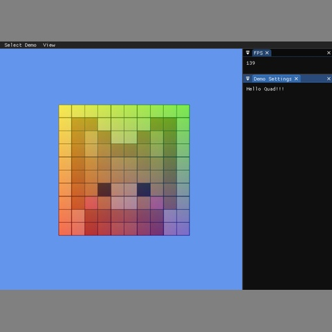

3D Graphics

Hello Quad is a foundational OpenGL rendering project focused on displaying and animating a textured quad. The goal of this project was to implement the basic rendering pipeline using vertex buffers, index buffers, vertex arrays, textures, and GLSL shaders. The demo runs both as a native Windows application and as a WebGL build embedded directly into this portfolio page.
This project helped me understand how OpenGL organizes rendering data through buffers, vertex arrays, textures, and shaders. One challenge was making sure that the CPU-side data layout matched the shader input layout correctly. I solved this by carefully connecting the vertex attributes for position, color, and texture coordinates through the VertexArray implementation.
Another challenge was making the animation work in a way that stayed compatible with desktop OpenGL, OpenGL ES, and WebGL. Passing time from the window environment into the shaders allowed the quad to animate without changing the vertex data every frame. This made the final demo more flexible and closer to a real-time graphics workflow.